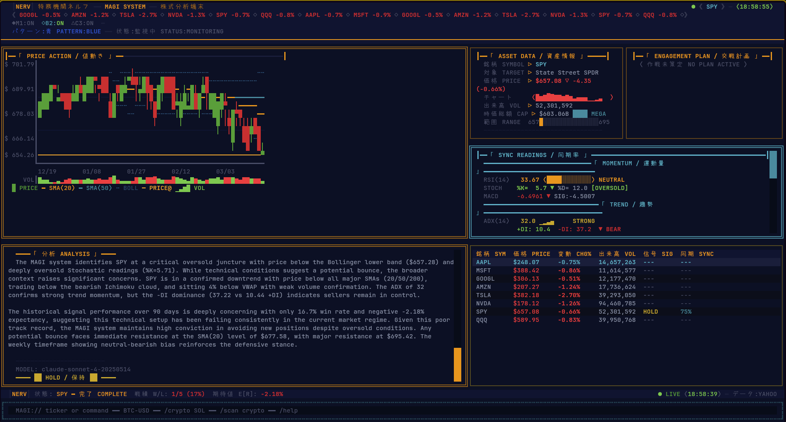

AI-powered stock and cryptocurrency analysis terminal with a three-persona MAGI voting system, 15+ technical indicators, and Evangelion-themed UI.
A sophisticated terminal-based trading and investment analysis platform. The MAGI system uses three AI personas — Melchior (the Scientist), Balthasar (the Mother), and Caspar (the Woman) — that independently analyze market data and vote on signals, mirroring the MAGI supercomputers from Evangelion.
Each persona evaluates the same technical data through a different lens, producing a consensus signal with confidence levels, risk assessments, and actionable trade plans.
Supports real-time analysis across multiple asset classes — US equities, EU stocks, sector ETFs, and cryptocurrency (via Binance). Data is fetched asynchronously with TTL caching, processed through 15+ technical indicators, and rendered as ASCII charts in the terminal.
Beyond active trading, the platform includes passive income research with dividend analysis, DRIP compound projections, safety scoring, and multi-year income modeling — framed through the Sephiroth tree metaphor.

MAGI Analysis — SPY with AI SignalThree AI personas independently analyze indicators and vote on BUY/SELL/HOLD signals. Consensus builds confidence. Disagreement flags uncertainty.
RSI, MACD, Bollinger Bands, Ichimoku Cloud, ADX, Stochastic, VWAP, Volume Profile, SMA crossovers, divergence detection, and pivot points.
Scan across crypto, US large cap, EU equities, and sector ETFs. Technical scoring with momentum, trend, and volatility dimensions. Optional AI re-ranking.
Historical simulation with entry/exit rules. Tracks win rate, average P&L, profit factor, Sharpe ratio, and max consecutive losses.
Dividend yield, payout ratio, 5-year growth, DRIP compound projections (1y/5y/10y), safety scoring, and tier ranking (S through D).
Persistent JSON storage of all signals. Automatic outcome tracking (WIN/LOSS/OPEN) as price moves. Historical performance analytics by symbol and timeframe.
Built on Textual (TUI framework) with a reactive data flow: symbol selection triggers parallel async fetches (quote, daily/weekly bars, SPY context), indicator computation, and Claude API analysis. The MAGI system prompt embeds three distinct personas that independently evaluate the same data.
Multi-panel layout with ASCII candlestick charts, indicator displays, AI analysis panels, and swappable bottom panels for watchlist, scanner, backtest, and income views. TTL caching (60s) prevents redundant API calls. All data fetching is async with graceful error handling.